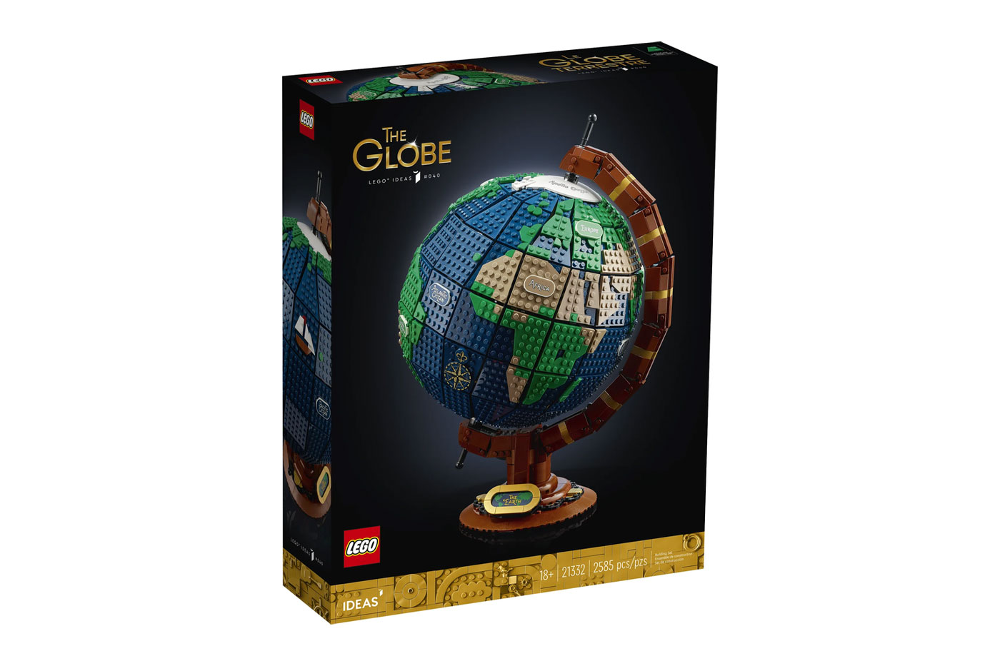

Globo Terráqueo
$5,099.00
¿Adónde quieres ir hoy? Sueña con tu próximo destino mientras construyes el Globo Terráqueo (21332).
Esta maqueta de exposición, creada por un fan diseñador y materializada por el equipo de LEGO® Ideas,
reproduce el movimiento giratorio de una esfera terrestre retro con la ayuda de elementos LEGO Technic.
El encantador modelo, con sus cubiertas que brillan en la oscuridad decoradas con los nombres de los
continentes y los océanos, los iconos construibles de un barco y una brújula, y la placa decorativa con
el rótulo “The Earth”, quedará impresionante expuesta en cualquier hogar u oficina.
MAS INFORMACION